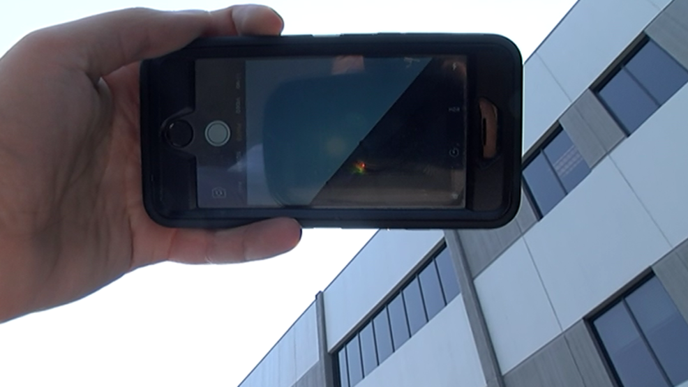

Books

Inspired by the influence of technology on humans, I got myself into the Software domain. Following the quote by Albert Einstein - 'The measure of intelligence is the ability to change', Computers sound intelligent; which is attributable to the alterations it has witnessed. This indulging intelligence forms the basis of my current research interests; namely Artificial Intelligence and Machine Learning.
Being lucid from the previous write-up that my interests circumscribes the Machine Learning domain, let's dive further into the fancy technical terms. While striving to be competent in Python, Machine Learning (Supervised/Unsupervised) and Data Science, I have set a seal on 3 major projects (Machine Learning); which consequently resulted into 3 publications: a Thesis and 2 Research papers, all concerning the Machine Learning domain. In addition, I employed the opportunity of presenting the Research article (at an International conference) to ameliorate my Presentation & Public Speaking skills. Further, engaging in a Hack-a-thon emerged to be an augment for my Leadership & Management finesse; apart from the technical skills.
As a consequence of being ardent over coding, I landed-up getting an Internship at the Indian Space Research Organisation (ISRO); the place where my skills got deployed to resolve some real-world quandary. Furthermore, I got myself acquainted with the industry experience through 2 other Internships; apart from ISRO.
Winding up, being a fervent CS graduate (from Indus University), I find myself to be best compatible with Machine Learning domain. In addition, I am much inclined to research work so as to build-up my command over the Machine-Learning concepts.
Hope you got a cogent perspective of my Writing finesse as well! Thank you for reading!😀
Domain: IT
Work: Developing and maintaining business applications.
Technology(s): HTML, CSS, JS, .NET, MySQL, SQL
Domain: IT
Work: Developing software modules for the Client(s).
Technology(s): Python, Java, MySQL
Conducted Independent Research under Prof. Hiren Mer.
Worked on improvising my B.Tech. Final-Year Thesis.
Published the findings in Springer CCIS.
Presented the research paper at ICAICR-2020.
Domain: Machine Learning
Work: Created software modules for autonomous driving of a rover prototype
Technology(s): Python - Supervised Learning
Domain: Blockchain
Work: Developed software module for storing Official Certifications using Blockchain
Achievement(s): Offered a Full-Time role, Invited for continuing the Internship in the US
Domain: Web Development
Work: Developed a Portfolio website along with the back-end connection to database
Technology(s): HTML - CSS - JavaScript - Php - MongoDB - MySQL
GPA: 9.88
Percentile: 93.4
Published by Springer
Published by Research Gate


Smartphones, as we know, have become a inseperable part of human life. As the days pass, the influence of this mobile device on humans
will increase exponentially to what it is today. Although Smartphones are typically Smart enough, they do lack smartness in some
aspects.
One aspect where the smartphone lacks is - Auto-Brightness Adjustment. Although it seems to be present as a feature across almost
all mobile devices, it is still not reliable enough. I believe almost all of the smartphone users would have experienced issues with this
feature. To be clear, this feature, sometimes, does opposite to what it should do. For example, even if there is considerable light present,
it will still decrease the Brightness; opposite to increasing it for better sight, and vice-versa.
This problem could be understood by considering a practical scenario. Assuming a person is holding a smartphone in between the source of light
and the eyes (See Figure below). Now, as the light sensor is on the front side, it detects less light than what the actual scenarion is. FYI,
the light sensor is used to measure and estimate the light w.r.t. the eye of the user. Accordingly, as it detects less intensity of light than
the acual light, it starts to decrease the brightness.

For resolving this issue, I am proposing a new method. Briefly, this method uses the images from both - front & rear cameras, and supplies it
to the trained Machine-Learning model; which predicts the approximate intensity of light and the value by which the brightness should be increased/decreased.
This Machine Learning model is trained with such images and their relative light intensities. FYI, the actual vale of the light sensor will also be
utilized as there are some outlier situations where light sensors become essential.
(This work is currently under construction and will be soon available publicly.)
Hope you liked the blog! If so, connect with me on FB/Insta/Twitter/LinkedIn by following the links in the about section.
~ Darshit Pandya